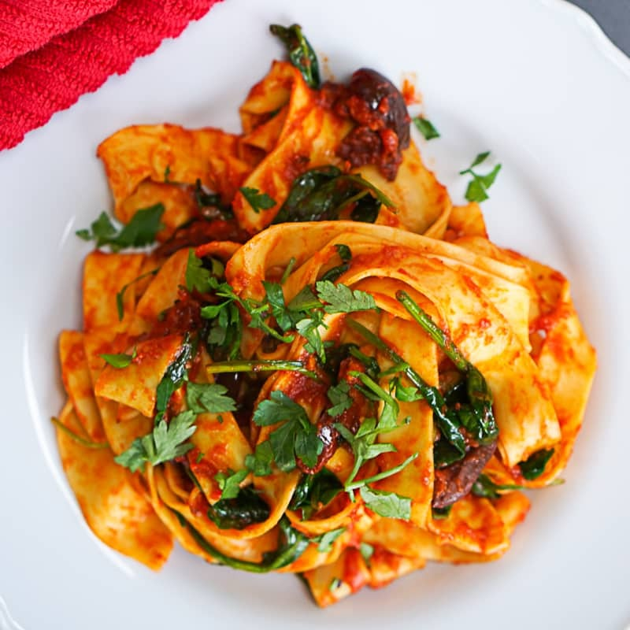

Harissa Pasta With Olives & Capers

A quick, vibrant pasta dish with a spicy tomato and harissa sauce, briny green olives, and capers. Finished with fresh herbs and lemon, this weeknight-friendly meal is packed with North African flavors.
Serves 4 | Takes 30 mins
Original recipe: Ottolenghi SIMPLE, p188